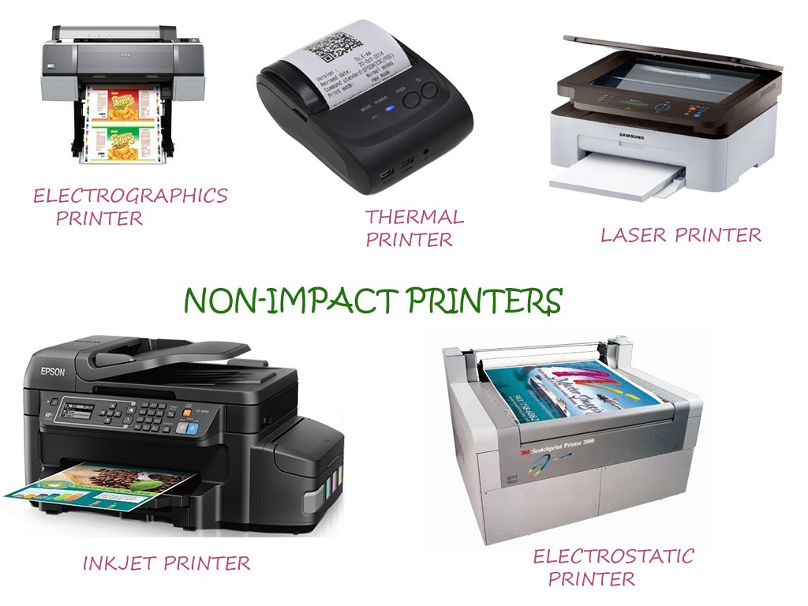

STUDY HUB STUDY HUB
STUDY HUB STUDY HUB
IN Explain :- printer is an output device,which produces hard copy of the output.the output is obtained on a paper It is called hard copy and if it is obtained on display terminal,it is called soft copy.two of the most commnly used output devices are printers or moniters.moniters produce soft copy and printers produce hard copy.some times the printer output can be obtained on flims/transparancies to be used on over head projectors too.thus a printer produces a permanent copy of the output. The printers can produces plain text, graphical images and some times complete pictures too. They can produce high quality monochrome and multicolor print outs according to requirement. The speed of morden computer is very high and they can be shared through the computer networks too. The role of printer is of great importance in computers field
Two types of printer are Impact and Non-Impact printers.
1.Impact printers :~{for more detail of Impact printer click on Impact printer}- Impact printers are those which strike on paper through inked ribbon to produce output on it.
- Normally all impact printers use a hammer against an inked ribbon such that ink from ribbon is transferred to the paper in the same
shape in which hammer strikes on it.
- Some common impact printer are Dot Matrix Printer , Chain Printer , Drum Printer etc.
.jpg "PrinteRs") 2.Non-Impact printer :~ {for more detail of Non-Impact printer click on Non-Impact printer}
2.Non-Impact printer :~ {for more detail of Non-Impact printer click on Non-Impact printer}- Non-Impact printer are those printer whose print heads do not strike to the paper to produce output are called Non-Impact printers.
- These printer use some other mechanism. It can be spraying of ink, heating of paper, some electrical or optical methods for
producing paper output.
- These printers can produce graphical images with same efficiency as that of text images.
- They can produce output at very high speed and they do not produce noise while printing Because of non impact mechanism.
- The only major problem with these printer is that they could not produce multiples of copies of output in one
Pass using carbon etc. because of lack of impact mechanism. But they are so fast that they can produce many copies
In seconds if required. They can produce color printing too.
- With some of the non impact printer special magnetized papers or chemical coated papers are required, which limits their use.
- Various non impact printer are ink jet printer, Laser printer, Thermal printer, Electrostatic printer,Electrographic printer,
Magnetic printer etc.

Back
Homepage